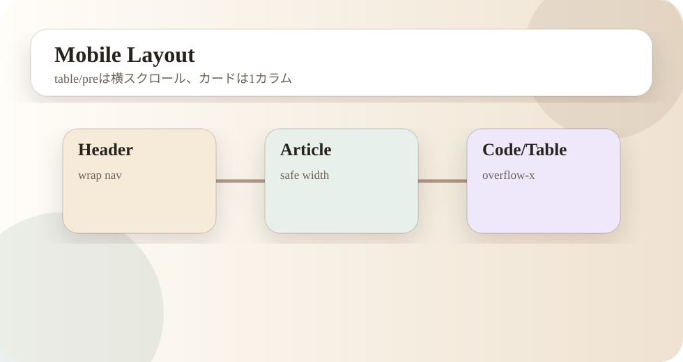

第08回：作業ログを公開サイトとして作り直す
Plugin本体とは別に、公開用のvoidcat-plugin-notesを作りました。ここには制作記録、構造、手順、注意点だけを載せます。APIキー、Client Secret、Railway Variables、.env、logs、実コミュニティ投稿データは含めません。
旧docsには構成解説、機能一覧、configui詳説、詳細記事がありました。再構成時に一度内容が薄くなったため、詳細記事を復活させ、各記事にモックと前後ボタンを戻しました。
スマホでの横はみ出しを避けるため、固定表示はタイトルだけにし、表とコードは内部スクロール、画像はSVGモック、サイドバーは通常のページツリーにしています。
最終構成は、最新記事、基本構造解説、作業記録、機能一覧、コンフィグ項目一覧、必要サービス、オリジナルbot化、詳細記事、共有方針です。

確認ポイント
- この段階で何を確認すべきかを明確にする。
- 秘密値や実ログを公開記事に含めない。
- 問題が起きた場合は、前段階へ戻って切り分ける。
- 作業後は必ずGit status、ビルド、対象ページ表示を確認する。
公開サイトとして守ること
GitHub Pagesに載せるのは、構造、作業判断、手順、モックです。実際のSecret、.env、logs、投稿本文、ユーザー情報は載せません。制作記録として価値があるのは、値そのものではなく、どの値が必要で、どこに設定し、どう確認するかです。
スマホ表示では、固定ボタンを増やすと画面を圧迫します。今回の版では、上部固定表示はタイトルだけにし、ページ移動はページツリーと下部ナビに寄せました。
実作業の分解
GitHub Pages側では、見た目だけでなく情報量と導線が重要です。詳細記事が短くなりすぎると、過去の作業判断が追えません。そのため、各詳細記事には、作業目的、手順、確認ポイント、モック、前後記事へのボタンを残します。
スマホ表示では、上部固定ボタンを増やさず、固定表示はタイトルだけにしました。ページ移動はページツリーと下部ナビで行い、表やコードは内部スクロールにしています。
この段階で大事なのは、作業結果を「動いた」「動かない」だけで判断しないことです。どの入力に対して、どの設定を読み、どの外部サービスへ接続し、どのログへ残るのかを確認します。BOTは一度動くと自動で投稿・返信するため、目に見える成功よりも、誤作動しないための確認が重要です。
また、ローカルで成功した作業とRailwayで成功した作業は分けて扱います。ローカルでは.envを読みますが、本番ではRailway Variablesを読みます。ローカルではファイルが残っていても、本番ではVolumeがなければ再デプロイで状態が消える可能性があります。この差を毎回意識します。
作業後は、Gitの差分、ビルド結果、確認コマンド、必要ならブラウザ表示を確認します。特に公開ノート側では、HTMLのリンク切れ、スマホでの横はみ出し、モック画像の表示、詳細記事の前後ナビを確認します。